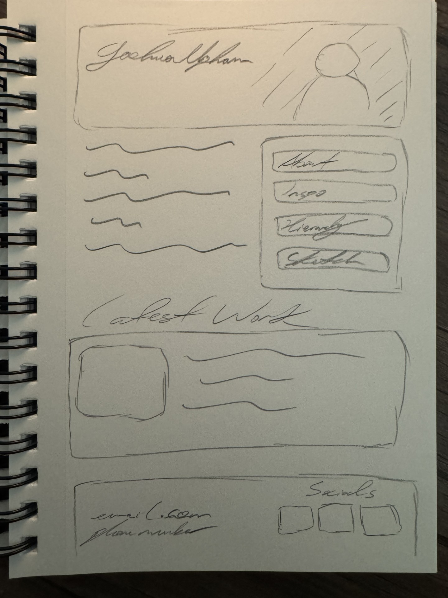

I was going pack* and forth between every folder and double-checking every name and link because the one for the sketchbook itself wasn't working. It was ten minutes later when I found that I had made the tiny typo of writing "href" as "herf."
The horrors persist.
P.S.
Roommate just noticed typo in the written reflection. (pack=back)*
The horrors persist.
P.P.S.
I just spent 30 minutes trying to get the links to connect from the other pages because I didn't realize that the ".." was literal in my notes, and just assumed it was where I put the file name.
When will the torment end?
I actually really enjoyed making my navigation system into something much closer to the style I was looking for. I wanted to go for a bubble sort of look, with calm natural feeling colors. Having the navigation look the same through every aspect of the site made it feel much more fluid and connected. I'm liking how it's beginning to feel real. It's got me thinking about creating my own site for my portfolio in the future. A lot of the actual design of the navigation came from just messing with different commands that automatically came up when I typed words like border and color, and testing out what they did. I still want the rest of the site to feel a bit more put together, and am thinking about the navigation being more of a box, that sits on the side of the screen. I put the css for the nav in the root sheet as it pertains to all pages, but left the modifications for a single page, on that page's own css.